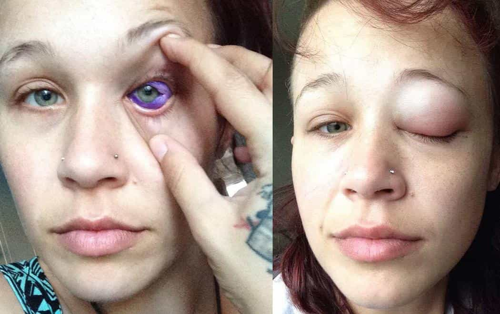

This account syndicates news from other media outlets.


It’s been four weeks since Catt Gallinger says her ex-boyfriend botched the procedure and she still doesn’t know just how bad the damage is.
Even when Catt Gallinger’s eye started leaking purple ink she didn’t think anything was wrong.
No, actually she thought it was fine. The 24-year-old model said she didn’t question it because her ex boyfriend—who injected the purple dye into the sclera (white part) of her left eye—told her it was normal. He also allegedly said that it’s not odd for the eye to swell up to a massive size. It was only when the man suddenly broke up with Gallinger and she asked other experts if everything was OK that she realized swelling and vision loss wasn’t normal at all.
And now, four weeks after getting the body modification procedure done, Gallinger doesn’t know if she’ll ever regain full sight in that eye again.

Gallinger is no stranger to body modifications, she sports a split tongue and many, many tattoos—”body modifications are part of who I am,” she told VICE. Gallinger said that the body modification was done by her then-boyfriend who swore to her that he had done this type of work successfully before. She says that he repeatedly pushed her to allow him to do the procedures.
“The artist, my ex-boyfriend, just kept pushing me until I got it done that night,” Gallinger told VICE. “We were only together for a month but I’ve known him for years. It was something I thought I could trust him with because he had a portfolio. I was wrong.”
So one night she gave in, let her then boyfriend numb her eye and inject purple ink into it. Gallinger, alongside experts, say that the the procedure is supposed to be done over two to three days with a small needle and a mixture of saline solution and a small amount of ink. When the saline solution evaporates from the eye it will then stain the scleral. Though her ex-boyfriend did numb the eye, that was about the only thing he got right.
“He did not dilute the ink with saline, he just put pure ink in my eye, he used a very large needle and went too deep,” said Gallinger. “He did two injections, one on the top and one on the bottom. It took only about ten minutes.”
The swelling and the pain was immediate but her ex-boyfriend, whom she was living with at the time, told her this was normal. She did go to the hospital but because the procedure is on the cutting edge of body modification, they didn’t know anything was wrong either. Gallinger was given pain medication, steroid drops for her eyes and was told to ice it.
Out of nowhere, while her eye was still swollen, Gallinger’s boyfriend broke up with her and gave her no reason—she now believes it’s because he knew he botched the procedure and “didn’t want to admit it.” Upon returning to her hometown, Gallinger sought a second opinion, something she readily admits she should have done immediately. At this point it was weeks later and her eye was still swollen, filled with ink and she was experiencing sight loss and pain.
“That’s when I found out how wrong the procedure had gone,” she told VICE.
Recently, Gallinger took to social media to tell her story—her posts have been shared thousands of times—saying that people need to research the individuals doing body modification. Answering a question on her Facebook page, Gallinger has said that she plans to take legal action.
In the near future, Gallinger will be meeting with eye specialists about how to go forward to remove the excess ink stuck in her eye. Next week she will be undergoing surgery, and the outlook is positive, but because this is a rare case no one really knows what can or will happen.
“The pain is like a constant cramp. It depends on the day, on the moment, the pain can increase or decrease,” she said. “Sightwise I have gotten some of my sight back, it’s at the point where I would need glasses.”
“It’s all a waiting game at this point, we’re learning as we go. If the ink solidifies, it’s supposed to take three months, it gets harder to remove and it can seriously impact your vision. If it moves back to the eye were the retina is, it can cause nerve damage.”
The Gallinger said she’s experienced significant mental health effects as a result of her situation and the backlash she received by going public with what happened. Gallinger told VICE she doesn’t want to leave her house, she’s losing weight at a rapid pace, quit modeling, and is suffering from severe depression.
“There is a lot of fear,” said Gallinger. “I’m living with my mom right now because I just can’t live on my own with everything that’s going on. The depression has hit very serious, scary moments where I have had to wake people up in the middle of my night because I was scared of what might happen.”
“I hit a point where I had to quit modelling because I can’t look myself in the mirror, let alone going to get photos done by people. It’s very hard to be secure when your body’s been damaged.”
Don’t Miss: I Spent One Month In The Epicenter Of Cultural Degeneracy